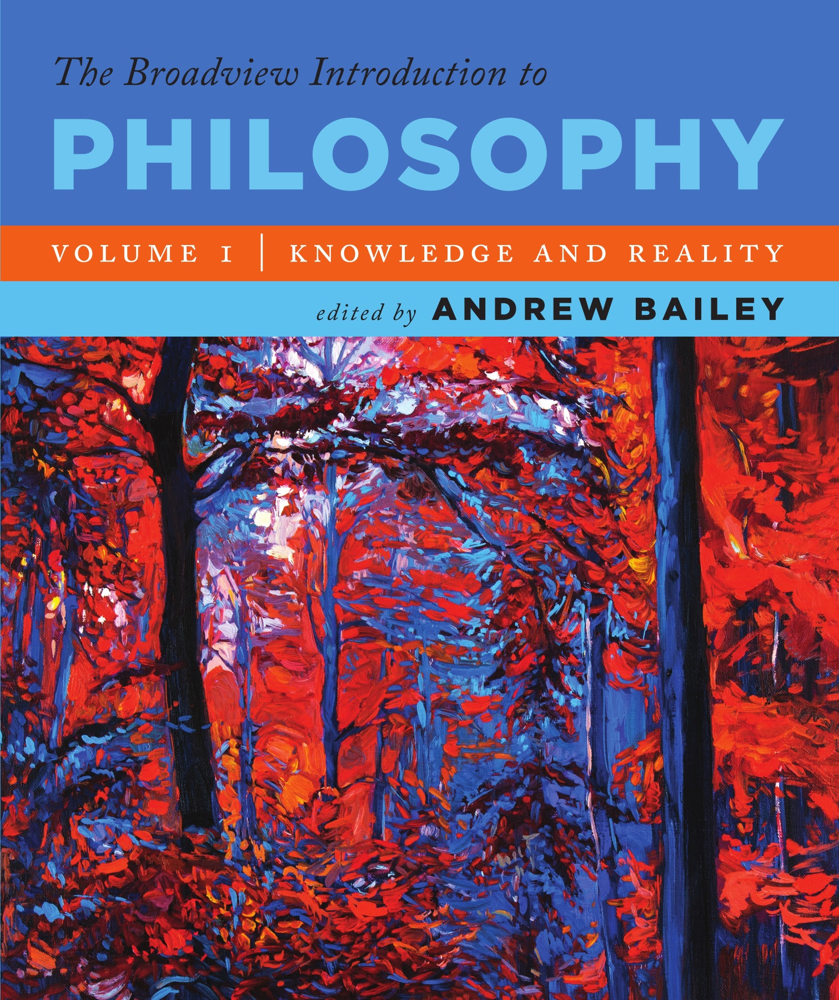

| Phil
101: Intro to Philosophy Prof. Jeremy Anderson Fall 2025 |
Reading
Assignments |
We might not do all these assignments, and I might change the order. I'll let you know in class and on the class schedule Google doc; if in doubt, please ask. Contents About
our texts
What is Philosophy? (assignment 1) Basic logic (assignments 2-3) Does God exist? (assignments 4-12) Can we know if matter exists? (assignments 13-26) Do we have free will? (assignments 27-33) How should we live? (assignments 34-9) About our texts Most of our readings are in
the Broadview
Introduction to Philosophy, Volume I.
If you cannot afford the textbook, see me right away! I have workarounds for many of the assignments if you need them. Don't fall behind by going without. You should know: There are several
different Broadview Introductions to Philosophy,
including the big one (orange cover), Volume I
(blue cover--this one), and Volume II (yellow cover).
Get Volume I for this course. Volume I looks like this ---> The book comes in printed and PDF versions. Printed copies are available at Eli's. You can get printed and downloadable versions via the publisher's site. I'll abbreviate the title BIP. Page numbers below are for the printed version. The page numbers in the PDF version may be different than in the printed version, but you can find content using your e-reader's Search. I will supply a PDF of our first two readings while you get the book. After that, I expect you to have your own. Any other assignments for this course will be posted online, either on our Google drive or linked directly from this page. Any problems? Let me know. What is Philosophy? Assignment 1.
Read:
Reading questions: (Be ready to discuss reading questions in class each day. Also, starting in the first full week of class, respond to at least one reading question per week in your reading responses. As a reminder, here are instructions for reading responses, and the forums to submit your responses are here.) A. In what ways do
philosophy’s methods differ from those used in
sciences such as neuroscience and economics? Why do
they differ? (To answer this question, focus on
"Philosophy as a method," pp. xiii-xiv.)
B. What are the three main branches of philosophy? (See "Philosophy as a Subject Matter," pp. xiv - xv, and look for the "three basic philosophical questions.") Notice that each branch raises one "foundational" question, and other related questions. What are these questions? Basic logic Assignment 2: ideas and terms philosophers use
(Be ready to discuss reading questions in class each day. Also, starting in the first full week of class, respond to at least one reading question per week in your reading responses. As a reminder, here are instructions for reading responses, and the forums to submit your responses are here.) In BIP: p. xxii,
question #4.
A. According to Aristotle, what are ethos, pathos, and logos (Aristotle, 7-8)? Can you give an example of each, other than the assigned videos? B. Can you explain where the ethos is in the "Willie Horton 1988 Attack Ad"? Explain how the "Pathos commercial" is an example of pathos. Use Aristotle's text to support your answers. C. Bailey provides an argument for the conclusion that “this rope will bear my weight” (Bailey, xvi). Is this argument deductive or inductive? How come? D. Explain what philosophers mean when they say an argument is valid, and when they say it is sound (Bailey, xvii - xviii). Assignment 3: Logic, cont.; more terms, and identifying fallacies. Readings:
(Be ready to discuss reading questions in class each day. Also, starting in the first full week of class, respond to at least one reading question per week in your reading responses. As a reminder, here are instructions for reading responses, and the forums to submit your responses are here.) In BIP: p. xxii,
question #3
A. Find--from outside our texts--or make up three bad arguments. Don't just re-word ones from the assigned readings; try to find really different sorts of bad arguments: bad inductive arguments, bad deductive arguments, arguments that seem bad in different ways. (Remember to cite whatever sources you use, per the integrity instructions.) B. Identify what is wrong with the following argument: “God is love. Love is blind. Ray Charles is blind. Therefore, Ray Charles is God.” Does God exist? Assignment 4: Anselm's ontological argument--what
is it?
Read:
(Be ready to discuss reading questions in class each day. Also, starting in the first full week of class, respond to at least one reading question per week in your reading responses. As a reminder, here are instructions for reading responses, and the forums to submit your responses are here. If using the e-book version of our textbook, here is how to find the page numbers to cite.) In BIP: pp. 17,
questions #1, 2.
A. Bailey describes three types of argument for God's existence (Bailey, 2). In your own words, define each one. B. Try to restate Anselm’s ontological argument in chapter 2 of Proslogion (Anselm, 7) in standard form. (Standard form is the numbered premise-conclusion format I often use in class; here is a guide to standard form.) Assignment 5: Anselm's ontological argument--is it sound? Re-read:
(Be ready to discuss reading questions in class each day. Also, starting in the first full week of class, respond to at least one reading question per week in your reading responses. As a reminder, here are instructions for reading responses, and the forums to submit your responses are here. If using the e-book version of our textbook, here is how to find the page numbers to cite.) In BIP pp. 17, #4, 6, 7,
8
If you haven't already responded to it, I recommend trying question B from assignment 4! The guide to standard form will be helpful. A. Many people have the sense that something is wrong with Anselm's argument (Anselm, 7). But what is it? Before criticizing it, review the "Common Misconceptions" in the introductory material (Bailey, 5). After that, what do you think is wrong with it (if you think something is wrong with it)? B. Look carefully at Gaunilo's Paragraph 4 (Gaunilo, 9-10). What is Gaunilo saying about our understanding of God? How might this cause a problem for Anselm's argument? C. Do the same for Gaunilo's Paragraph 6 (Gaunilo, 10): what does Gaunilo say about an island? How might this be a problem for Anselm's argument? Assignment 6: Aquinas's cosmological (and other) arguments.
In BIP p. 28, questions #1, 2, 3. A. Look carefully at
Aquinas's "first way" (26). Try to restate his argument
in standard form. It might have more steps than Anselm's
ontological argument. (Again, standard form is the
numbered premise-conclusion form I often use in class; here is a
guide to standard form.)
B. How does the "Book Domino Chain World Record" video demonstrate what Aquinas is saying in his "first way"? Can you connect what happens in the video to the premises and conclusion of Aquinas's argument? (In other words, can you point out similarities between them?) (Remember to cite; the academic integrity instructions show how to cite videos.) Assignment 7: The cosmological argument in Hume (from Demea). Read:
In BIP p. 49, question
#8.
A. Can you restate Demea's cosmological argument (45-6), in a paragraph or in standard form? (It begins at, "The argument, replied Demea, which I would insist on, is the common one," and continues to the end of that paragraph.) B. Cleanthes presents several objections to Demea's cosmological argument on pp. 46-7. Can you restate any of them in a paragraph, or in standard form? Assignment 8: The design argument in Hume (from Cleanthes). Read:
In BIP p. 49, #2, 4, 6.
A. In these readings we have Cleanthes' design argument (Hume, 35) and several criticisms of it from Philo (e.g., Hume 35-40, 43-5). Take any one of those arguments and restate it either in a paragraph, or in standard form. B. Philo presents several objections to Cleanthes' design argument. Rather than rebut the objections, Cleanthes seems content to conclude, "To this concession I adhere steadily; and this I regard as a sufficient foundation for religion" (Hume, 45). What does Cleanthes mean by this? Do you agree it is a sufficient foundation for religion? How come? Assignment 9: A contemporary design argument using DNA. The design argument, often
called “Intelligent Design,” is still important in
contemporary American affairs. Various groups have been
trying for years to get some version of it (there are
many) taught in public school science courses.
Discussion of design arguments, both favorable and
critical, is abundant on the internet.
View and read these (if you have problems viewing the videos on YouTube, copies are on our Google drive):
A. In "Evidence for
Intelligent Design," Kenyon & Dembski argue for an
intelligent designer to account for DNA. Try to
restate their argument either in a paragraph or standard
form. (Remember to cite; the academic integrity
instructions show how to cite videos.)
B. How is the argument presented in "Evidence for Intelligent Design" similar to, and different from, those we have looked at so far? C. Sagan argues for a naturalistic account of the origin of life. Try to restate his argument either in a paragraph or standard form. (Again, remember to cite; the academic integrity instructions show how to cite videos.) D. What weaknesses can you find in Kenyon & Dembski's argument, and in Sagan's? Assignment 10: Another contemporary design argument using "irreducible complexity." Read & watch:
Reading questions:
A. In several places in
the reading, Behe claims that "irreducible complexity"
is evidence of design. What is irreducible complexity,
and how does Behe think it indicates there is a
(non-human) designer of things like the cilium and
bacterial flagella?
B. The segment from "Intelligent Design on Trial" presents Behe's design argument and criticism of it. What is that criticism? C. Kitcher claims Behe has misrepresented evolution; he says that Behe's account of evolution "is just plain silly, and Darwinians ought to disavow any commitment to it." Why does Kitcher think it is silly? Assignment 11: Mackie's argument that an omnipotent, good God cannot exist. Read:
Assignment 12: James' pragmatic defense of Pascal's wager. Read BIP 108-23:
In BIP 124, questions
#1, 4-7.
A. James mentions a famous argument for belief in God called "Pascal's wager" (113-4). What is Pascal's argument? Do you find it persuasive? B. James says, "The talk of believing by our volition seems, then, from one point of view, simply silly. From another point of view it is worse than silly, it is vile" (James, 114). To show why it may seem vile, James quotes from Clough, Huxley, and Clifford (James, 114-5). Why do they -- especially Clifford -- think it is vile? C. James claims that our passions "not only lawfully may, but must, decide" whenever we have options which cannot be decided purely by evidence (part IV, p. 116, and part VIII, p. 119). How does James argue for this? D. How does James argue that it is hopeless to wait for proof (part VI)? E. How does James argue that refusing to believe may be costly (section IX)? (Look at his example of "Do you like me or not?" on p. 121.) How is this supposed to help James show we may believe in God? Can we know if matter exists? Assignment 13: starting Descartes.
Read:
Reading questions: A. In the first
paragraph of the First Meditation Descartes says he
will devote himself to “an earnest and unfettered
demolition of my [former] opinions” (143). Why does he
want to do this? How does he propose to accomplish it?
(See the second paragraph.)
B. How does Descartes argue that his apparently waking experiences might be dreams (144, second full paragraph)? Which of his former beliefs does this “Dream Doubt” cast doubt on? Which are left over--i.e., what things are still true "whether I am awake or asleep" (144)? Assignment 14: Dream Doubt and Defective Nature Doubt.
(This excerpt is
borrowed from Humanistic
Texts. Alas, the original seems to have been
moved.)
Reading questions: A. On p. 144 Descartes
says, "it becomes completely clear to me that there
are no certain indicators which ever enable us to
differentiate between being awake and being asleep."
In other words, he is saying there is no absolutely
sure way to tell whether you are awake or asleep. This
is the conclusion of an argument. What are the
premises for it? Try to put the argument in standard
form. Is the argument inductive or deductive?
B. If Descartes is right that we cannot tell for sure whether we are dreaming or awake, what would that imply about our knowledge of material things? Why? C. In the first two paragraphs of p. 145, Descartes argues that he may be wrong even about the simplest things, such as that 2+3=5. Can you explain his argument, or put it in standard form? (The argument starts at with "Nevertheless, a certain opinion has for a long time been fixed in my mind..." and ends with "there is nothing in the beliefs which I formerly held to be true about which one cannot raise doubts.") Assignment 15: Descartes, cont.: proving some small things. Assignments:
A. How does Descartes
become certain that he exists (Second Meditation,
third paragraph)?
B. How does Descartes argue that he is a "thinking thing" (pp. 146, fourth paragraph, through the first paragraph on 148)? What does he mean by "a thing that thinks" (148, first paragraph)? (Proving what kind of thing he is is different from showing that he exists.) C. Put yourself in Descartes's position, with Dream Doubt and Defective Nature Doubt. Suppose that "I exist" and "I am a thinking thing" are the only things you know. How might you proceed to find other things you could be absolutely certain of? Is it even possible? How come? Assignment 16: Descartes, cont.: proving some big things. Read:
A. How is proving God
exists helpful for Descartes's overall project?
Specifically, how would it help him overcome
"defective nature doubt"?
B. In the Third Meditation, Descartes argues that God must exist. (See especially lines 31-91; the brief restatements of his argument in lines 219-30 and 249-54 may be helpful.) Try to identify the premises and restate the argument in your own words (no quoting), in standard form. (Here is a guide to standard form.) Of the three types of argument that God exists (cf. assignment #4), which type is this argument? (This question is harder than it might seem. Consider all three kinds.) C. In the second paragraph of the Fourth Meditation (lines 258-61), Descartes argues that God would never deceive him. Try to identify the premises and restate the argument (again, in your own words), in standard form. What do you think of the argument? Assignment 17: Descartes, cont.: did he succeed? Re-read the texts for
assignment 16, plus Anderson,
"Weaponizing Descartes's Method of Doubt" (on our
Google Drive).
Reading questions: A. Descartes argues that
his idea of God could only have come from God. Keeping
in mind his descriptions of his idea of God (in the
handout, see lines 82-6, 136-50, 167-75, 203-4,
228-30, 251-2), in what other way(s) could he have
gotten this idea? (Keep in mind you must account for
it being an idea of an actually infinite being that is
perfect in all ways.)
B. What other objections might there be to Descartes's argument that God exists? C. (If you haven't already written a response to this question before...) In the second paragraph of the Fourth Meditation, Descartes argues that God would never deceive him (lines 258-61). Try to identify the premises and restate the argument (again, in your own words), in standard form. What do you think of the argument? Assignment 18: Descartes, cont.: the "real distinction" of mind and body, and the mind/body problem. Read:
In BIP p. 172, question
#9. Also:
A. Descartes argues for the conclusion that "my mind is completely distinct from my body and can exist without it" (167). Try to identify the premises and restate the argument, in your own words, in standard form. Assignment 19: Descartes, cont.: matter exists. Re-read the Sixth
Meditation (M6). Focus most on pages 167, where he
argues that "corporeal things" (that is, material
things) exist, and 168-9, where he discusses the role of
the senses.
Reading questions: A. How does Descartes
argue that “corporeal things exist”? (The argument is
on p. 167; it starts at "Now, it is, in fact, true
that I do have a certain passive faculty of
perception..." and ends with "And therefore corporeal
things exist.") Can you put this argument into
standard form? (Here is the guide to
standard form.)
B. What does Descartes think the proper purpose of the senses is (169)? Assignment 20: Descartes, cont.: matter exists, cont. Re-read the texts for
assignment 19.
Reading questions: A. How convincing is
Descartes's argument that material things exist? What
objections can you think of besides any already
discussed in class? Try make each objection into an
argument with the conclusion "So, Descartes's argument
is unsound."
B. If Descartes's argument for material things is bad, what would a good argument be? Is a good argument possible? (Don't forget Dream Doubt! Unless you can refute Dream Doubt, you cannot just say "material things exist because I can sense them," because your sensations could be dreams.) Assignment 21: Locke's argument for matter. Read:
A. How does Locke argue
that we can be sure material things (e.g., tables and
chairs) exist? His argument is in Book IV chapter XI,
which starts on p. 184. Notice the text is divided
into numbered sections (§1, §2, etc.). In
sections 1-2 Locke says, essentially, that the way to
show material things exist is to show that our ideas of them were
caused by things outside us -- in other
words, he needs to show that our ideas of tables and
chairs are not just dreams or hallucinations. That
much is similar to Descartes. But Locke's argument,
given in sections 3-8 (pp. 184-6) is very different
from Descartes's. Try to piece it together.
Assignment 22: Locke's argument for matter, cont. Re-read Locke pp. 184-6,
sections 3-8.
Reading questions: In BIP p. 189: questions
#4, 6. Also:
A. Evaluate Locke's arguments that material objects exist. How are the various parts of it helpful (or not) in showing material objects exist? How strong are the various parts of it? (We will likely skip assignment #23.) Assignment 23: Locke on what we can know of the material world. Read:
Reading questions: In BIP pp. 189,
questions #1, 2, 5, 7.
A. According to Locke, what are primary qualities? (See especially p. 178 § 8, where he defines "idea" and "quality"; §§ 9-10, where he says which of our ideas come from primary qualities and which come from secondary qualities; and p. 179 § 15, where he says which ideas resemble the things that cause them.) Don't just list the primary qualities; try to define what makes something a primary quality. This can be confusing; Locke describes it differently in different places. B. According to Locke, what are secondary qualities? (Again, see especially §§ 8-10 and 15.) Don't just list the secondary qualities; try to define what makes something a secondary quality. C. How does Locke think we come to have an idea of substance (182-4)? How much does he think we actually know about substances? Assignment 24: Berkeley's immaterialist monism.
A. Look carefully at
sections 1-4 of Berkeley's Treatise. There is an argument
here--or rather, the premises of an argument for the
conclusion, "Material substance (matter) is
inconceivable" or "We cannot know anything about
material things." Can you piece the argument together?
(It may be helpful to look carefully at sections 6,
22-3, and 34-36, where Berkeley sums up his view.)
B. How effectively, if at all, does Berkeley undermine your conviction (if you have it) that material things exist? Point to specific parts of his argument that you find especially relevant. C. Berkeley denies we can know that matter exists, because we can have no idea of it. Yet he says we can know that mind exists. How does he argue for our knowledge of mind (sections 25-6)? Assignment 25: Berkeley, cont. Re-read Berkeley's
Treatise (on our Google Drive), sections 1-36,
139-156.
Reading questions: A. Look carefully at
section 18. Starting at, "So if we are to have any
knowledge of external things [i.e., material objects],
it must be by reason, inferring their existence from what
is immediately perceived by sense...," Berkeley argues
that we cannot prove
material things exist (i.e., that there can be
no sound deductive
argument for material things). Can you state
the argument?
B. Look carefully at section 19. Beginning with, "But this is not tenable either," Berkeley argues that we cannot know that material things probably exist (i.e., that there can be no strong inductive argument for material things). Can you state the argument here? C. In sections 29-32 and again in 145-149, Berkeley argues that God exists. What is his argument? Assignment 26: Russell. Read:
A. (This question only
makes sense if we did assignment #23.) Locke
identified certain qualities as primary qualities,
claiming that the
ideas they cause in us match how things really are.
How might Russell's discussion of the
table--especially his examples of texture, shape, and
touch--challenge Locke on this point (Russell, 3)?
B. How does Russell argue that our perceptions of color, texture, and shape don't match how things really are (Russell, 2-3)? C. Russell says it is "simpler" and more "natural" to believe that "there really are objects independent of us, whose action on us causes our sensations" (10). He argues for this in his discussion of the cat and the conversation with a person (10-1), which is an inference to the best explanation. Can you explain his argument? Notice that there are two parts: one about the cat, the other about human beings (11). D. How convincing is Russell's argument that the "simple" (best) explanation of our sense-data is is that there are material things (11)? How come? Do we have free will? Assignment 27: Rée's hard determinism.
Exercise (this is not a reading response; please do it before class, preferably before even doing the reading): in 30 words or fewer, use this survey on Moodle to say what you think "free will" is. Your answers will be anonymous; please do not include your name on the survey. Answers may be read aloud in class. Read:
In BIP p. 428, questions
# 2, 3, 5, 7.
A. Rée compares a stone, a donkey, and a person. Explain the comparison, and what it is supposed to show. How plausible is the comparison? B. Eagleman claims that "most of what we do and think and feel is not under our conscious control" and that "Your consciousness is like a tiny stowaway on a transatlantic steamship, taking credit for the journey without acknowledging the massive engineering underfoot" (3-4). What do these claims imply about how free we are? What evidence does Eagleman give for them? C. Explain how Eagleman compares your conscious mind to a newspaper reader (4-5). What does this suggest about how free we are? Assignment 28: Campbell's libertarianism. Read: Campbell
introductory material (by Bailey) and Campbell's On
Selfhood and Godhood (on our Google drive).
Reading questions: In the PDF, p. 544,
questions #1, 3-5.
A. Campbell says that we are free, but only in very specific, limited circumstances (e.g., on p. 550, at the very end of section 5). Try to articulate precisely what those circumstances are. When you choose freely, according to Campbell, what exactly are you choosing between? Does he think you always do what you choose to do? Assignment 29: Campbell vs. Rée, continued. Re-read Rée,
Eagleman, & Campbell.
Reading questions: A. A determinist might
say, "Human behavior is very predictable. That shows
that we do not have free will." How does Campbell
respond to this objection (section 9, 552-3)?
B. Campbell considers the following objection: "Free will as you [Campbell] describe it is completely unintelligible" (section 10, 553). In your own words, explain what this objection means (Campbell explains it in the following sentences). How does Campbell respond to it? C. How much are you persuaded by Rée that we are not free? How come? D. How well do Campbell’s arguments respond to Rée’s? Why do you think so? Assignment 30: Ayer's compatibilism. Read:
In BIP p. 444, questions
#1, 2.
A. Ayer discusses determinism, and concludes that we cannot be sure whether it is true (439-40). What reasons does he give for this? (Look for what he says about the claim that everything has a cause, 439, and about our ability to predict what people will do, 440.) B. How does Ayer argue that the only way we can be responsible is if determinism is true (440)? C. How does Ayer distinguish between "constrained" and "free" actions? In other words, when does he think you are constrained, and when are you "free" (442)? Notice the different examples of constraint, such as the gun to the head and the kleptomaniac. How are these cases alike, and how are they different? D. Ayer says you are free, and responsible, when your actions are not constrained, even though such "free" actions are determined. Do you think being unconstrained is a satisfactory basis for holding people responsible? How come? Assignment 31: Frankfurt's compatibilism. Read:
A. TBA
B. TBA C. TBA Assignment 32: Dennett's defense of (a version of) free will. Read: Daniel
Dennett introductory material (by Bailey) and "On
Giving Libertarians What They Say They Want" (on our
Google drive)
Reading questions: In the Dennett
introductory material, pp. 566-7, #7,8.
A. One of the most important parts of Dennett's article is his third case (572-3). Look at it closely. Then think about how you have made some major decision in life, such as whether to come to DePauw. How well does this third case match your decision process? How plausible is it, then, as a description of how we decide? B. Another important
part of Dennett's article is his reasons why the
third case is good (574-5). Do you think Dennett
makes a good case here? Is there something about his
third case--either positive or negative--that he has
left out?
Assignment 33: Wolf's compatibilism. Read:
A. Pulling from the
writings of Frankfurt, Watson, and Taylor, Wolf
identifies what she calls the "deep self" view. What
is this view?
B. How does Wolf use the example of JoJo to identify a problem with the deep self view? C. How does Wolf think that adding a condition of sanity to the deep self view helps remedy it? How should we live? We may skip and/or change
the order of assignments. As always, pay attention to
assignments announced in class.
Assignment 34: a Taoist approach. Read Chuang-tzu,
“Three Tales” (on our Google Drive)
This excerpt contains
three short pieces: "The Tale of the Butcher,” “The
Tale of the Dying Men,” and "The Tale of the Horses."
You'll see that each tale has its overt content, but
also hints at deeper meanings, suggesting broader
lessons about how to live, the proper attitude to have
towards adversity, and human nature & society. Our
task will be to find those lessons. Look for them as
you read.
Reading questions: A. At the end of “The
Tale of the Butcher” the Prince declares that he has
"learned how to care for life." What is it that he has
learned? The lesson here is not about butchering meat,
but about something deeper. What is it? Point to
evidence in the text to support your interpretation.
B. In “The Tale of the Dying Men,” how do the men’s attitudes towards death and suffering differ from what is “normal”? What do the men seem to tell us about our place in the world? C. “The Tale of the Horses” suggests we compare ourselves with horses, and compare the history of our society with the history of our management of horses. What are we supposed to learn from this? Assignment 35: Taylor's roundabout approach. Read Richard
Taylor, “The Meaning of Life” (on our Google Drive)
Reading questions: A. Taylor uses the myth
of Sisyphus, and the example of the glow worms, to
identify a perfectly meaningless existence. What,
exactly, makes this existence meaningless? Do you
agree that it is meaningless?
B. Taylor identifies two ways in which a life could acquire meaning. One is by culminating in something, such as if Sisyphus built a temple. Why does Taylor later condemn this as "the picture of infinite boredom"? Do you agree with his evaluation of it? C. How does Taylor think that our lives can have meaning? He seems to think that this is the only way; do you agree that it is? Assignment 36: Tolstoy's theistic approach. Read Leo
Tolstoy, "What is the Aim of Life?" (on our Google
Drive)
Reading questions: A. Imagine a
conversation between Tolstoy and Chuang-tzu's Dying
Men. What might the dying men say to Tolstoy? How
might Tolstoy respond?
B. Imagine a conversation between Tolstoy and Taylor. What might Taylor say to Tolstoy? How might Tolstoy respond? C. What do you take to be Tolstoy's main point in this reading? Do you agree with it? D. Which argument or claim in this reading struck you as most interesting, or enlightening, or wrongheaded? How come? (We will likely skip #37) Assignment 37: the Euthyphro problem. Read:
A. Socrates raises the
question "whether the pious or holy is beloved by the
gods because it is holy, or holy because it is beloved
of the gods" (10a). What is the difference between
these two?
B. What is the Euthyphro problem? C. How might Tolstoy's proposal (having faith, following God's law, 8) run into the Euthyphro problem? D. Identify at least one proposed solution to the Euthyphro problem. How satisfactory is it? Assignment 38: Glaucon's pessimism about human nature and the value of justice. Read: Plato,
Glaucon's Challenge (PDF on our Google drive; pay most
attention to pp. 611-3)
Exercise (this is not a reading response; please everyone do it): in 30 words or fewer, use this survey on Moodle to say what you would do if you had the ring. Read Plato and you'll know what I mean. Your answers will be anonymous; please do NOT include your name on the survey, but complete it before class. Answers may be read aloud in class, so don't write anything you wouldn't want classmates to hear. Reading questions: A. Glaucon explains
"what justice is and what its origins are" (Plato, end
of 611). What does he say its origin is? What is
justice, then?
B. In "The Tale of the Horses" Chuang-tzu suggests that we are naturally good, and that governance is bad for us. How does Glaucon (or, more precisely, Glaucon's account of what "most people" think justice is) differ? C. How does Glaucon's account of morality (Plato, end of 611) differ from Tolstoy's? (Think about where morality comes from, what it tells us to do, what may be gained from following it, etc.) Assignment 39: Sartre's existentialism. Read:
A. Sartre claims that,
for us (as opposed to a paper-knife), "existence comes
before essence." What does he mean by this? How does
it support his claim that "man is in anguish"?
B. What does Sartre mean by "abandonment"? How does he use the example of the pupil who came for advice to explain what abandonment is? C. What is Sartre telling us about the meaning of life? How is it different from what Chuang-tzu is telling us? Further assignments TBA. |
|||
|
|
|